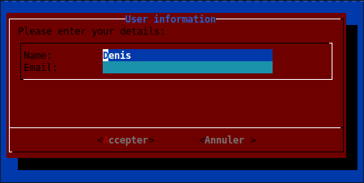
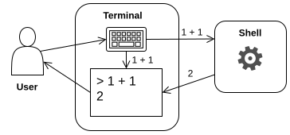
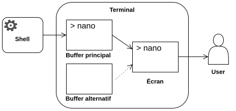
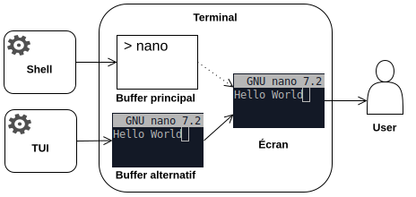
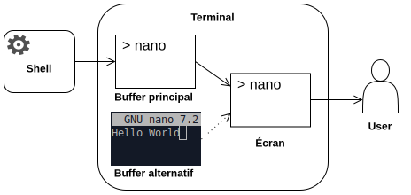

CM3 : Commandes Shell
Historique des IHM
En soit, un ordinateur est un circuit électronique, qui pour une entrée donnée produit une sortie. Initialement, l'entrée était constituée d'une série d'interrupteurs, et la sortie d'une série de lampes (début XIXe siècle).
Au fur et à mesure que ces circuits électroniques grandissent (~1940), ces éléments d'entrés-sorties seront regroupés sur un poste de contrôle appelé "panneau de commande", "pupitre de commande", ou "console de commande", séparé du reste de l'ordinateur (mainframe).
Cartes perforées et impression
Cependant, les interrupteurs sont peu pratiques. On va très vite vouloir stocker les entrées (données et/ou instructions) afin de pouvoir facilement les rejouer, les transporter, et les archiver. Or, on sait déjà faire cela depuis au moins 1321 avec les cylindres à picots (e.g. boîtes à musiques), et depuis 1725 avec les cartes perforées (métiers à tisser, piano mécanique, etc). C'est ainsi qu'à partir de 1890, les cartes perforées seront utilisées par les tous premiers systèmes électroniques.
De même, les lampes sont peu pratiques. Si on a très vite utilisé des cadrans (tout en conservant des voyants), on souhaite conserver les résultats sans avoir à les retranscrire à la main. On désire alors imprimer les résultats. Or, cette technologie existe déjà depuis 1840 avec les télégraphes électriques. C'est ainsi qu'en 1925, le premier ordinateur avec imprimante voit le jour.
Clavier et CLI
Perforer les cartes manuellement, est peu pratique. Heureusement, dès 1901, les perforatrices intègre un clavier facilitant l'écritures des cartes. En eux-même les claviers ne sont pas nouveaux, avec les premières machines à écrire en 1808 et les télégraphes électriques en 1846.
Et si au lieu de perforer une carte au clavier, puis d'insérer la carte dans l'ordinateur, on intégrait directement le clavier à l'ordinateur ? C'est ainsi que les premiers claviers sur ordinateurs apparaissent vers 1941 (clavier numérique) et 1956 (clavier alpha-numérique).
Le clavier permet ainsi de saisir des instructions (commandes) directement sur l'ordinateur qui l'imprime puis en imprime les résultats (télétype). On se heurte toutefois à un double problème :
- comment indiquer que l'ordinateur est prêt à recevoir une nouvelle commande ?
- lors de l'impression, comment distinguer la commande exécutée de son résultat ?
On utilise alors une invite de commande (prompt) permettant d'indiquer que l'ordinateur a fini d'exécuter la commande précédente, et qu'une nouvelle commande peut être saisie. La commande est alors imprimée sur la même ligne que l'invite, permettant de différencier les commandes des résultats. La commande tenant sur une ligne, on parle alors de ligne de commande.
C'est ce qu'on appelle une interface en ligne de commande (CLI - Command Line Interface).
Fichiers exécutables
Si le clavier permet la saisie de données et de commandes directement sur l'ordinateur, il ne remplace pas pour autant les cartes perforées. En effet, il reste peu efficace pour la saisie d'entrées complexes et/ou répétés.
Toutefois, parallèlement à l'intégration des claviers, les ordinateurs gagnent progressivement en capacité de stockage interne, avec les bandes magnétiques en 1951 et les disques durs en 1956. Les cartes perforées (utilisées jusqu'en 1980-1990) seront progressivement remplacées par les bandes magnétiques, Internet (1970), les disquettes (1971), les CD/DVD (1982), clefs USB (2000), etc.
Il faudra toutefois attendre 1961 pour avoir les premiers systèmes de fichiers. Dès lors, il est possible d'écrire (sans écrans...), puis d'enregistrer, des instructions dans un fichier qu'on pourra ensuite exécuter sur demande. On parle alors de fichiers exécutables.
Écrans et TUI
Si la télévision date de 1926, il faudra attendre 1951 pour avoir les premiers écrans informatiques qui restent très limités. Ce n'est qu'en 1964 que les écrans permettent l'affichage du texte, remplaçant ainsi les imprimantes pour la visualisation. C'est au même moment qu'apparaissent les terminaux, une paire écran/clavier distants permettant à un utilisateur de se connecter à l'ordinateur (mainframe). Le mainframe continue toutefois de disposer d'une console pour son administration.
Contrairement aux imprimantes qui étaient limitées à une écriture séquentielle, sans possibilité de revenir en arrière, les écrans permettent d'écrire à n'importe quelle position de leur surface. Il est ainsi possible de construire des interfaces plus ergonomiques et intuitives avec e.g. des formulaires de saisie, des menus, voire un panneau de commande virtuel. On parle alors d'interface textuelle/terminal (TUI - Text-based/Terminal User Interface).

La première souris apparaît en 1968, elle permet alors de naviguer en cliquant sur les éléments de l'écran, au lieu d'utiliser les touches du clavier (tabulation, flèches).
Les lignes de commandes (CLI) conservent toutefois de nombreux avantages :
- on peut les enregistrer dans un fichier (script) afin d'en automatiser l'exécution.
- on bénéficie de toute la puissance d'un langage de programmation (variables, conditions, boucles, etc).
Fenêtres et GUI
Les interfaces graphiques modernes (GUI - Graphical User Interface) n'apparaissent qu'en 1973 avec un gestionnaire de fenêtre, permettant de manipuler des fenêtres à la souris et de les dessiner pixel par pixel.
Les terminaux disparaissent progressivement au profit d'ordinateurs personnels équipés d'une interface graphique. Les émulateurs de terminal vont alors simuler un terminal au sein d'une fenêtre graphique, maintenant la possibilité d'administrer les ordinateurs en lignes de commandes.
Les ordinateurs commencent à être reliés entre eux à partir de 1969, permettant leur administration à distance. Cependant, l'ouverture d'une session graphique à distance (1982) reste très coûteuse jusqu'à la démocratisation de la fibre (~2010). Même aujourd'hui, l'accès à distance s'effectue principalement en mode texte (CLI et TUI).
De nombreux ordinateurs ne disposent pas d'une GUI (e.g. serveurs, embarqués) afin de réduire les surfaces d'attaques, et d'en économiser les ressources (calculs, réseau, etc.).
Le Shell
Comme nous venons de le voir, les interfaces en ligne de commande restent encore très utilisées de nos jours, bien qu'anciennes (1956). Aujourd'hui on utilise le Shell (1971) qui est à la fois :
- le langage dans lequel on écrit les lignes de commandes.
- l'interpréteur qui lit et exécute les lignes de commandes.
Le Terminal sert alors d'interface graphique entre l'utilisateur et le Shell. Il permet d'écrire des lignes de commandes qui seront envoyées au Shell, puis d'en visualiser les résultats retournés par le Shell.

Commandes Shell
Une ligne de commande est une ligne de texte représentant une instruction à exécuter, e.g. :
En Shell, une ligne de commande commence par une commande qui représente l'instruction à exécuter, e.g. :
- : copy, copier un fichier.
- : move, déplacer un fichier.
- : remove, supprimer un fichier.
- : créer un fichier.
- : make directory/créer dossier.
- : rechercher un fichier.
La commande est potentiellement suivie d'un ou de plusieurs arguments, le tout séparé par des espaces :
Ainsi, lorsque le Shell interprète une ligne de commande, il découpe tout d'abord la ligne en utilisant les espaces comme séparateurs. Le premier élément est alors la commande à exécuter, et les éléments suivants, les arguments à lui passer en paramètre.
Les arguments (appel) sont les valeurs qu'on transmets aux paramètres (définition) d'une commande/fonction.
Si un argument contient un espace, il sera interprété comme deux arguments distincts. Pour éviter cela, il convient d'échapper l'espace, ou de le placer entre guillemets simples :
En soit, l'appel d'une commande s'apparente à l'appel d'une fonction, avec une commande à exécuter (≈ une fonction à exécuter) et des arguments passés en paramètres de la commande (fonction). La syntaxe est toutefois différente des appels de fonction dont vous avez l'habitude en R ou en Python :
- Ligne de commande Shell : .
- Appel d'une fonction python : .
La documentation
Lire la documentation
L'usage d'une commande est décrite par sa signature, qui utilise les notations suivantes :
| Syntaxe | Signification | Exemple |
|---|---|---|
| une valeur (à remplacer). | ||
| valeur facultative. | ou | |
| l'un ou l'autre. | ou | |
| un ou plusieurs arguments. | ||
| idem, mais séparés par une virgule. |
Une commande s'utilise dès lors très simplement :
- recopier la signature de la commande.
- remplacer les encadrés par la valeur souhaitée.
Par exemple, l'usage des commandes , , et peuvent être décrites ainsi :
- : supprimer (remove).
- : copier (copy).
- : déplacer (move).
- : si dossier (recursive).
- dossier dans lequel placer (target).
- nouveau chemin de (not target).
Les arguments préfixés par sont des options modifiant le comportement de la commande.
Les fichiers supprimés via sont supprimés définitivement. Ainsi, il est préférable d'utiliser la commande , afin de placer les fichiers dans la corbeille de l'utilisateur, permettant de restaurer les fichiers supprimés par erreurs.
Accéder à la documentation
L'accès à la documentation des commandes dépend de leur nature (cf ) :
- si (commande "normale") :
- si ou (interne au Shell) : .
La commande est une version simplifiée de et de .
Nous vous fournissons une cheat sheet donnant l'usage simplifié des commandes utilisées dans le cadre de cours.
Historique et auto-complétion
Les flèches du clavier permettent de modifier une ligne de commande en cours d'écriture (/), ainsi que de parcourir l'historique des commandes exécutées (/) afin de les re-exécuter (éventuellement après modifications).
Le Shell fournit aussi une fonctionnalité d'auto-complétion des commandes et des chemins, via la touche de tabulation (). La complétion n'est effectuée que si elle ne présente aucune ambiguïté. Dans le cas contraire, une seconde pression () affiche alors les différentes possibilités.
Afin d'éviter les erreurs de saisies, il est très vivement encouragé d'utiliser l'auto-complétion du shell dès que possible.
Les fichiers
Organiser les fichiers
Catalogues de fichiers
En 1961, chaque projet/utilisateur dispose d'un catalogue de fichiers, regroupant un ensemble de fichiers identifiés par leur nom.
Des commandes permettent alors de sélectionner un catalogue afin d'en accéder au contenu. Un nom de fichier était ainsi interprété en fonction du catalogue actuellement sélectionné.
Des commandes permettent alors de sélectionner un catalogue afin d'en accéder au contenu. Un nom de fichier était ainsi interprété en fonction du catalogue actuellement sélectionné.
Cependant, à mesure que le nombre de fichiers augmentait, le besoin de mieux les organiser se faisait sentir.
Les répertoires
Dès 1965, les catalogues sont remplacés par une arborescence de répertoires (directory). Chaque répertoire peut ainsi contenir des fichiers, mais aussi d'autres répertoires, et ce, de manière récursive.
Chaque utilisateur dispose alors d'un répertoire personnel qu'on appelle home. Un nom de fichier est dès lors interprété en fonction du répertoire actuellement sélectionné, qu'on appelle répertoire de travail (working directory).
Les répertoires (directory) sont aussi appelés dossiers (folder). "Répertoire" est le terme technique consacré, quand "dossier" est l'appellation courante, utilisée dans les interfaces graphiques (GUI) et auprès du grand publique.
Arborescence Linux
Sous Linux tous les fichiers sont, directement ou indirectement, contenus dans le dossier racine (root directory), noté :
Parcourir l'arborescence Linux
Les commandes
Sous Linux, on utilise les commandes suivantes :
- (list) affiche le contenu du dossier (par défaut, du répertoire de travail).
- (change directory) aller dans le dossier (par défaut, répertoire personnel).
> ls 📂User1 📂User2 > ls User1 📂faa 📄foo > cd User1 > ls 📂faa 📄foo >
désigne le dossier parent du répertoire courant, ainsi permet de remonter dans l'arborescence.
La version de que nous utilisons dispose d'une option permettant d'afficher l'arborescence d'un dossier.
L'invite de commande
Avec l'apparition des dossiers, de l'accès à distance, et des postes multi-utilisateurs, on souhaite savoir où on se trouve afin de s'assurer que les commandes sont exécutées sur le bon ordinateur, et dans le bon dossier. Bien évidemment, des commandes permettent d'afficher ces informations :
- : utilisateur.
- : nom de l'ordinateur.
- (print working directory) : dossier.
Toutefois, il est peu pratique de constamment exécuter la commande pour se situer. L'invite de commande a ainsi été enrichie afin d'afficher ces informations avant chaque saisie de commande :
Dans cet exemple, nous avons donc :
demigda@Latitude:~$
- l'utilisateur, ;
- le nom de l'ordinateur, ;
- et le répertoire de travail, .
se lit "at" en anglais et indique un lieu. Par exemple une adresse mail signifie :
"le compte qui se trouve sur le serveur ".
"le compte qui se trouve sur le serveur ".
est une manière de désigner le répertoire personnel de l'utilisateur (par défaut, utilisateur courant).
L'invite facilite ainsi grandement la navigation :
> ls 📂User1 📂User2 > ls User1 📂faa 📄foo > cd User1 > ls 📂faa 📄foo >
user@host:/$ ls 📂User1 📂User2 user@host:/$ ls User1 📂faa 📄foo user@host:/$ cd User1 user@host:/User1$ ls 📂faa 📄foo user@host:/User1$
Les chemins
Si l'utilisation d'un fichier requiert de se placer dans son dossier, et ainsi naviguer dans l'arborescence, cela serait très vite incommodant. Encore plus si, dans une même commande, on souhaite utiliser des fichiers en provenance de différents dossiers.
On désire donc pouvoir désigner n'importe quel fichier, qu'il se trouve ou non dans le répertoire de travail. Pour cela on utilise un chemin (path), qui est la "route" à emprunter pour atteindre le fichier.
Chemins relatifs
Le chemin relatif (relative path) d'un fichier est son chemin à partir du répertoire de travail (noté ). Les différents dossiers à parcourir sont séparés par un .
Par exemple, si on se trouve dans le dossier , le chemin indique que pour atteindre le fichier , il faudra :
- partir du répertoire de travail (ici dossier ).
- aller dans le dossier .
- pour enfin atteindre .
📂 /
└── 📂 tmp
└── 📂 foo
├── 📄 faa
├── 📂 fee
└── 📄 fuu
Par convention, lorsque le chemin désigne un dossier, on le suffixera par , e.g. .
Chemins absolus
Le chemin absolu (absolute path) d'un fichier est sont chemin à partir de la racine. Comme pour les chemins relatifs, les dossiers à parcourir sont séparés par un . Les chemins absolus permettent ainsi de désigner un fichier indépendamment du répertoire de travail.
Par exemple, le chemin indique que pour atteindre le fichier , il faudra :
- partir de la racine .
- aller dans le dossier .
- aller dans le dossier .
- pour enfin atteindre .
📂 /
└── 📂 tmp
└── 📂 foo
├── 📄 faa
├── 📂 fee
└── 📄 fuu
Ensemble de chemins
Dans une commande, lorsqu'on souhaite manipuler un ensemble de fichiers, on préfère éviter d'avoir à écrire leurs chemins uns à uns. Pour cela on utilise les caractères de remplacements (wildcard) :
- : représente 0 à plusieurs caractères, e.g. : tous les fichiers d'extension ".txt" dans le dossier courant.
- : représente 0 à plusieurs dossiers, e.g. : le fichier "foo.txt" dans un des sous dossiers.
- : représente une alternative, e.g. : "foo.txt" ou "faa.txt" dans le dossier courant.
En réalité, le Shell réécrit la ligne de commande avant de l'exécuter. Il interprète ainsi les caractères spéciaux, comme les caractères de remplacements, ainsi que avant d'exécuter la ligne de commande.
Nous fournissons une commande affichant la ligne de commande finale, sans l'exécuter :
Si des commandes comme acceptent des caractères de remplacements en argument, ces derniers doivent être exécutés par la commande, et non par le Shell. Il convient alors de les échapper (ou de les placer entre guillemets) afin d'éviter leur interprétation par le Shell, e.g. : .
Le terminal
Une pseudo-imprimante
Le terminal se comporte comme une imprimante : il reçoit un flux séquentiel de caractères, qu'il "imprime" l'un après l'autre. Il n'affiche cependant que les dernières lignes à l'écran, et intègre une fonctionnalité permettant de défiler (scroll) à l'écran l'ensemble des lignes "imprimées".
Comme une imprimante, il est contrôlé par le biais de caractères de contrôle non-imprimables, transmis dans le même flux que les caractères à "imprimer", e.g. :
- , newline.
- , tabulation.
- , backspace.
- , alert.
- ou , escape.
(aussi noté ) permet de saisir des séquences de contrôles, pour des opérations plus spécifiques, e.g. changer la couleur du texte, déplacer le curseur, etc. C'est ainsi que certaines commandes Shell contrôlent le terminal, comme :
- : efface l'écran.
- : réinitialise le terminal.
La commande quitte le Shell actuel. Si celui-ci est associé à un terminal graphique, son arrêt entraîne généralement la fermeture du terminal. Elle n'envoie ainsi pas de caractère ou de séquence de contrôle.
Le clavier
De manière analogue, le terminal converti les événements clavier en un flux séquentiel de caractères, pouvant aussi contenir des caractères ou des séquences de contrôle. Ce flux de caractères est alors lu par la commande en cours d'exécution, sinon par le Shell.
Toutefois, le terminal dispose de raccourcis claviers qu'il interprétera sans les envoyer au flux de caractères. Ces raccourcis claviers sont usuellement préfixés par contrôle + majuscule () permettant de les distinguer aisément, e.g. :
- , copier
- , coller
Attention à ne pas oublier la touche majuscule pour la copie. En effet, arrête la commande en cours d'exécution.
Sous Linux, vous pouvez aussi coller un texte sélectionné via le clic-milieu ou clic-molette de la souris.
Commandes TUI
Il est aussi possible de lancer des applications TUI dans le terminal par le biais de commandes Shell. Par exemple, la commande lance un éditeur de texte dans le terminal :

Raccourcis claviers indiqués en bas de la fenêtre.
Raccourcis claviers indiqués en bas de la fenêtre.
Lorsqu'une commande s'exécute, elle "prend" le contrôle du terminal (clavier et écran), et ne le rend qu'une fois son exécution terminée. Ainsi, pour revenir au Shell et entrer de nouvelles commandes, il faudra tout d'abord quitter l'application TUI en cours d'exécution.
Les interfaces TUI sont moins "standard", mais sont plus ergonomiques. Afin de faciliter votre apprentissage, nous essayerons de proposer des alternatives TUI ergonomiques lorsque possible.
Buffer alternatif
Le Shell et les commandes n'écrivent pas directement sur l'écran du terminal, mais dans un tampon (buffer) qui est ensuite affiché à l'écran par le terminal. Le terminal dispose en réalité de deux buffers :
- le buffer principal : utilisé par le Shell et les commandes CLI.
- le buffer alternatif : utilisé par les commandes TUI.
Vous pouvez voir les buffers comme deux imprimantes indépendantes, dont une seule est affichée à l'écran. Par défaut, le buffer principal (correspondant au Shell et aux commandes CLI) est affiché à l'écran. Lorsqu'on exécute une commande TUI, on écrit sur le buffer alternatif qui est alors affiché à l'écran.



En conséquence, lorsqu'on quitte l'application TUI, on retourne sur le buffer principal, qui est resté inchangé depuis le lancement de l'application TUI. On retrouve ainsi l'écran tel qu'il était avant le lancement de l'application TUI.
La souris
Les applications TUI peuvent être manipulées avec la souris. Pour cela ils en activent la prise en charge via une séquence de contrôle envoyée au terminal. Le terminal converti alors les événements souris en séquences de contrôle envoyées à l'application TUI.